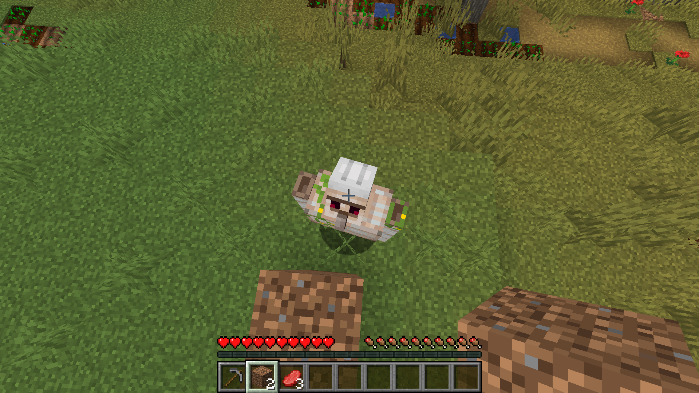

Minecraft-Speedruns können verwirrend wirken, aber mit den richtigen Tricks kann man schnell ins Nether gelangen. Anstatt auf eine Diamantspitzhacke zu warten, kann man mit nur sieben Eisenstücken schneller ins Nether gelangen. Dörfer und Schiffwracks sind zwei leichte Möglichkeiten, um schnell alle benötigten Eisen zu sammeln. Erhöhe die Render-Distance um Dörfer in der Nähe zu erkennen, und nutze Eisengolems, um Eisen zu sammeln. Schiffwracks bieten eine schnellere Möglichkeit, ins Nether zu gelangen, aber man muss sie zuerst im Ozean finden. Nutze einen Komposter und Fässer, um einen Eimer zu kaufen und zusätzliche Eisenstücke zu erhalten. Man kann ohne Flint und Feuerstein ein Portal zum Nether anzünden, indem man das Holz an der Lava entzündet. Verwende das Wasser und Lava, um ein Portal zu erschaffen, und nutze die Türen (wenn du unterwasser bist), um zu überleben. Nach dem Sammeln von Ressourcen aus einem Schiffwrack kann man ein Boot und Türen herstellen, um unter Wasser zu atmen.
Zünde das Portal an und betrete den Nether.
Verwende dazu ein Feuerzeug oder platziere Holz und warte bis dieses entflammt.
Im Nether musst du folgende Recorssen sammeln: Enderperlen und Lohenstaub
Enderperlen bekommst du aus einer Bastion indem du dort Gold abbaust und es dann bei Piglins eintauschst.
Das Ziel sind mindestens 12 Enderperlen.
Danach musst du eine Nether-Festung finden und Blazes töten, um an Lohenstaub zu kommen.
Von den Piglins hast du hoffentlich 8 Obsidian bekommen, um den Nether wieder zu verlassen.
Nun kannst du mit Hilfe von Triangulation die End-Festung mit nur zwei Enderaugen finde.
Bei der Methode Triangulation wendest du Mathe an um den Stronghold zu finden.
Hierzu einmal ein Tutorial:
Im End besiegst du den Enderdrachen mit Betten.
Den diese exxplodieren im End und die Explosion kann den Enderdrachen am schnellsten töten.
Nun hast du es endlich geschaft.